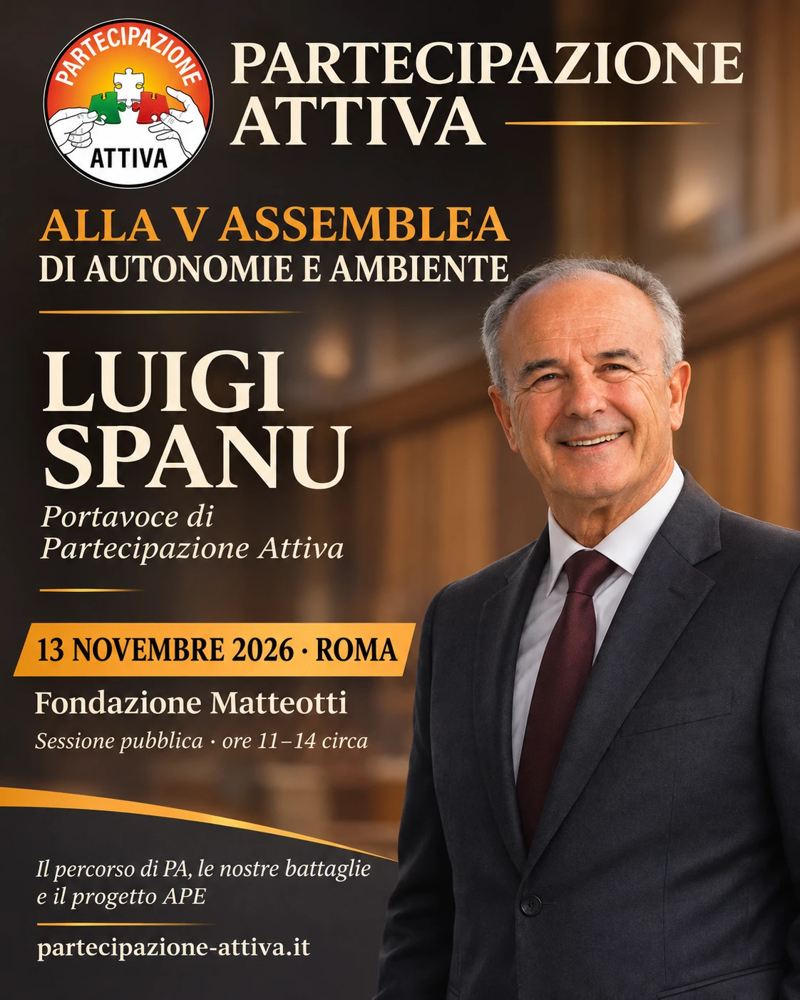

Il 13 novembre 2026 Partecipazione Attiva sarà presente a Roma, presso la Fondazione Matteotti, alla V Assemblea confederale di Autonomie e Ambiente, dedicata al tema «Autonomie europee: la cura degli estremismi».
Accogliamo con piacere l’invito, che nasce da anni di battaglie condivise con i comitati per una legge elettorale rispettosa della rappresentanza e del voto dei cittadini.
Luigi Spanu porterà i saluti di Partecipazione Attiva
A rappresentare PA sarà il nostro portavoce Luigi Spanu, che porterà i saluti del movimento e racconterà il nostro percorso: le battaglie condotte, le proposte elaborate e l’impegno per dare ai cittadini strumenti concreti di partecipazione.
Un’attenzione particolare sarà dedicata al progetto APE. Spanu metterà a disposizione dei presenti alcune copie del volantino e della lettera alle associazioni, per far conoscere il progetto e favorire nuove occasioni di confronto e collaborazione.
Ringraziamo Autonomie e Ambiente per l’invito e per aver dato spazio alla nostra esperienza.
Roma, Fondazione Matteotti
13 novembre 2026
Sessione pubblica dalle 11 alle 14 circa.
Informazioni sull’assemblea sul sito di Autonomie e Ambiente